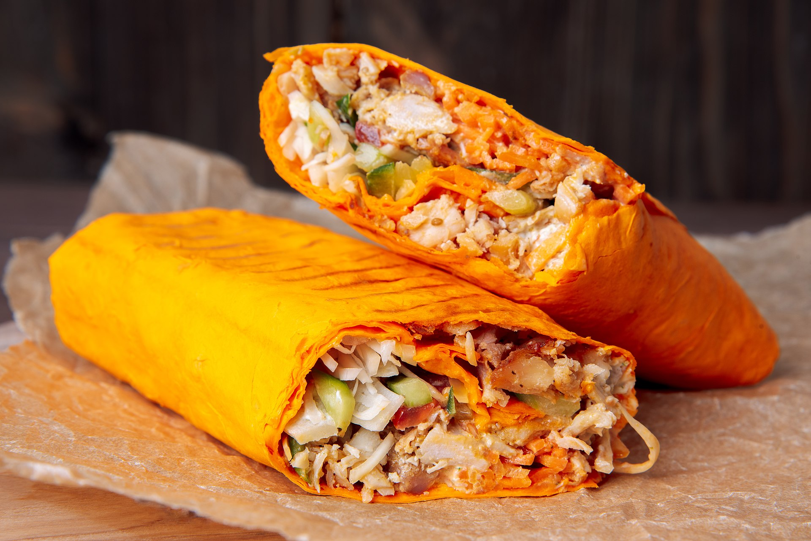

Shawarma Recipe

What is a Shawarma?
Shawarma is a dish that originated from Levantine during the Ottoman Empire.It is dish consisting of meat cut into thin slices and struck on a grill which cooks the meat by slowly rotating.It can be made with meat ( chicken , mutton , beef , turkey ) or in a fully veg way ( falafel ).The meat on grill is momentarily shaved of and added into a pita bread along with sauces and some vegetables.The bread is then wrapped to form a roll which is a shawarma roll.Shwarama is a very popular dish right now as even on social media platforms channels like Shelby's Canada have blown up over the years with their funny shorts.It is an incredible dish that is now available world wide but let's make it at our home shall we
Ingredients
- 1/2 Cup malt vinegar
- 1/4 Cup plain yogurt
- 1 Tablespoon vegetable oil
- Salt and pepper
- 1 Teaspoon mixed spice
- 1/4 Teaspoon of freshly ground cardamom
- 8 Skinless,boneless chicken thighs
- 1/2 Cup tahini
- 1/2 Teaspoon of minced garlic
- 2 Tablespoons of lemon juice
- 1 Tablespoon olive oil
- 1 Tablespoon chopped fresh parsley
- 4 Tomatoes thinly sliced
- 1 Sliced onion
- 4 Cups of shredded lettuce
- 8 Pita bread rounds
Steps
- In a glass baking dish, mix together the malt vinegar, 1/4 cup yogurt, vegetable oil, mixed spice, cardamom, salt and pepper. Place the chicken thighs into the mixture and turn to coat. Cover and marinate in the refrigerator for at least 4 hours or overnight.
- Preheat the oven to 350 degrees F (175 degrees C). In a small bowl, mix together the tahini, 1/4 cup yogurt, garlic, lemon juice, olive oil, and parsley. Season with salt and pepper, taste, and adjust flavors if desired. Cover and refrigerate.
- Cover the chicken and bake in the marinade for 30 minutes, turning once. Uncover, and cook for an additional 5 to 10 minutes, or until chicken is browned and cooked through. Remove from the dish, and cut into slices.
- Place sliced chicken, tomato, onion, and lettuce onto pita breads. Roll up, and top with the tahini sauce
Now you can enjoy the shawarma from the comfort of your home
Home page